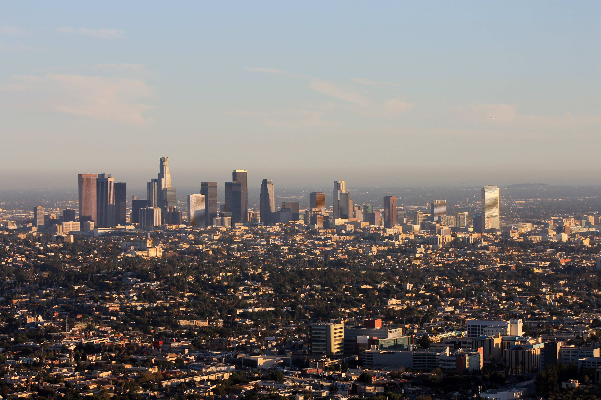

It was admitted as the 31st state of the union on September 9, 1850, and by the early 1960s it was the most populous U.S. state. No version of the origin of California’s
name has been fully accepted, but there is wide support for the contention that it derived from an early 16th-century Spanish novel, Las sergas de Esplandián (“The Adventures of
Esplandián”), that described a paradisiacal island full of gold and precious stones called California. The influence of the Spanish settlers of the 18th and 19th centuries is evident
in California’s architecture and place-names. The capital is Sacramento. The fluid nature of the state’s social, economic, and political life—shaped so largely by the influx of
people from other states and countries—has for centuries made California a laboratory for testing new modes of living. California’s population, concentrated mostly along the coast,
is the most urban in the United States, with more than three-fourths of the state’s people living in the Los Angeles, San Francisco, and San Diego metropolitan areas. Despite its
urbanization and the loss of land to industry, California still leads the country in agricultural production. About one-half of the state’s land is federally owned. National parks
located throughout the state are devoted to the preservation of nature and natural resources. Area 163,695 square miles (423,967 square km). Population (2020) 39,538,223; (2024 est.)
39,431,263.
| Elected Officials | Tourist Spots |
|
|
Reference:
https://www.britannica.com/place/California-state
Go back to Map Page